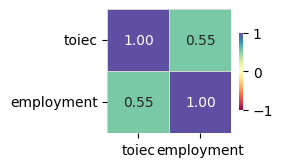
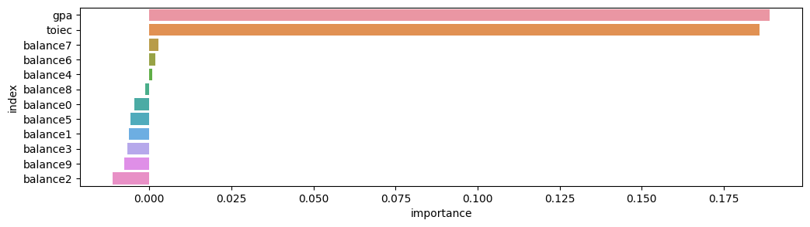
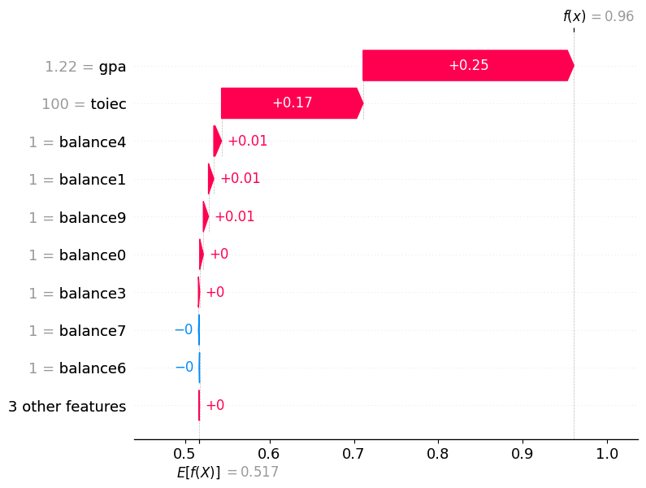

#!pip install autogluon.eda13wk-52: 취업(오버피팅) / 자료분석(Autogluon)
1. 강의영상
2. Imports
import numpy as np
import pandas as pd
import matplotlib.pyplot as plt
import seaborn as sns
import sklearn.model_selection
#---#
from autogluon.tabular import TabularPredictor
import autogluon.eda.auto as auto
#---#
import warnings
warnings.filterwarnings('ignore')3. Data
np.random.randn(43052)
n_balance = 10
toeic = np.random.randint(0,199,size=5000)*5
gpa = np.random.randint(100,450,size=5000)/100
u = toeic * 8/995 + gpa * 10/4.5
u = u - np.mean(u)
v = np.exp(u)/(1+np.exp(u))
employment = np.random.binomial(n=1,p=v)
df = pd.DataFrame({
'toiec':toeic,
'gpa':gpa,
'employment':employment
})
df_balance = pd.DataFrame((np.random.randn(5000,n_balance)).reshape(5000,n_balance)*1,columns = ['balance'+str(i) for i in range(n_balance)]) > 0
df = pd.concat([df,df_balance],axis=1).assign(employment = lambda df: df.employment.map({0:'No',1:'Yes'}))
df_train, df_test = sklearn.model_selection.train_test_split(df, test_size=0.7, random_state=42)df_train| toiec | gpa | employment | balance0 | balance1 | balance2 | balance3 | balance4 | balance5 | balance6 | balance7 | balance8 | balance9 | |
|---|---|---|---|---|---|---|---|---|---|---|---|---|---|
| 4431 | 195 | 2.50 | No | True | False | False | False | True | False | True | False | False | False |
| 2162 | 410 | 3.74 | Yes | True | False | True | True | False | True | False | False | False | False |
| 2396 | 940 | 1.07 | No | True | False | False | False | False | False | True | True | True | True |
| 4768 | 785 | 4.21 | Yes | False | True | False | True | False | False | True | True | True | True |
| 2271 | 965 | 3.32 | Yes | True | False | True | False | False | True | True | False | False | True |
| ... | ... | ... | ... | ... | ... | ... | ... | ... | ... | ... | ... | ... | ... |
| 4426 | 745 | 3.19 | Yes | True | True | False | True | True | False | True | False | True | True |
| 466 | 790 | 3.82 | Yes | True | True | False | True | False | False | True | False | True | False |
| 3092 | 800 | 1.41 | No | False | True | False | False | False | False | False | True | False | True |
| 3772 | 290 | 1.35 | No | False | False | True | True | False | False | True | True | False | True |
| 860 | 965 | 4.46 | Yes | False | False | True | True | False | False | False | True | False | True |
1500 rows × 13 columns
4. 적합
# step1 -- pass
# step2
predictr = TabularPredictor(label='employment')
# step3
predictr.fit(df_train)
# step4
yhat = predictr.predict(df_train)No path specified. Models will be saved in: "AutogluonModels/ag-20231201_110823/"
Beginning AutoGluon training ...
AutoGluon will save models to "AutogluonModels/ag-20231201_110823/"
AutoGluon Version: 0.8.2
Python Version: 3.10.13
Operating System: Linux
Platform Machine: x86_64
Platform Version: #26~22.04.1-Ubuntu SMP PREEMPT_DYNAMIC Thu Jul 13 16:27:29 UTC 2
Disk Space Avail: 248.41 GB / 490.57 GB (50.6%)
Train Data Rows: 1500
Train Data Columns: 12
Label Column: employment
Preprocessing data ...
AutoGluon infers your prediction problem is: 'binary' (because only two unique label-values observed).
2 unique label values: ['No', 'Yes']
If 'binary' is not the correct problem_type, please manually specify the problem_type parameter during predictor init (You may specify problem_type as one of: ['binary', 'multiclass', 'regression'])
Selected class <--> label mapping: class 1 = Yes, class 0 = No
Note: For your binary classification, AutoGluon arbitrarily selected which label-value represents positive (Yes) vs negative (No) class.
To explicitly set the positive_class, either rename classes to 1 and 0, or specify positive_class in Predictor init.
Using Feature Generators to preprocess the data ...
Fitting AutoMLPipelineFeatureGenerator...
Available Memory: 126338.85 MB
Train Data (Original) Memory Usage: 0.04 MB (0.0% of available memory)
Inferring data type of each feature based on column values. Set feature_metadata_in to manually specify special dtypes of the features.
Stage 1 Generators:
Fitting AsTypeFeatureGenerator...
Note: Converting 10 features to boolean dtype as they only contain 2 unique values.
Stage 2 Generators:
Fitting FillNaFeatureGenerator...
Stage 3 Generators:
Fitting IdentityFeatureGenerator...
Stage 4 Generators:
Fitting DropUniqueFeatureGenerator...
Stage 5 Generators:
Fitting DropDuplicatesFeatureGenerator...
Types of features in original data (raw dtype, special dtypes):
('bool', []) : 10 | ['balance0', 'balance1', 'balance2', 'balance3', 'balance4', ...]
('float', []) : 1 | ['gpa']
('int', []) : 1 | ['toiec']
Types of features in processed data (raw dtype, special dtypes):
('float', []) : 1 | ['gpa']
('int', []) : 1 | ['toiec']
('int', ['bool']) : 10 | ['balance0', 'balance1', 'balance2', 'balance3', 'balance4', ...]
0.0s = Fit runtime
12 features in original data used to generate 12 features in processed data.
Train Data (Processed) Memory Usage: 0.04 MB (0.0% of available memory)
Data preprocessing and feature engineering runtime = 0.04s ...
AutoGluon will gauge predictive performance using evaluation metric: 'accuracy'
To change this, specify the eval_metric parameter of Predictor()
Automatically generating train/validation split with holdout_frac=0.2, Train Rows: 1200, Val Rows: 300
User-specified model hyperparameters to be fit:
{
'NN_TORCH': {},
'GBM': [{'extra_trees': True, 'ag_args': {'name_suffix': 'XT'}}, {}, 'GBMLarge'],
'CAT': {},
'XGB': {},
'FASTAI': {},
'RF': [{'criterion': 'gini', 'ag_args': {'name_suffix': 'Gini', 'problem_types': ['binary', 'multiclass']}}, {'criterion': 'entropy', 'ag_args': {'name_suffix': 'Entr', 'problem_types': ['binary', 'multiclass']}}, {'criterion': 'squared_error', 'ag_args': {'name_suffix': 'MSE', 'problem_types': ['regression', 'quantile']}}],
'XT': [{'criterion': 'gini', 'ag_args': {'name_suffix': 'Gini', 'problem_types': ['binary', 'multiclass']}}, {'criterion': 'entropy', 'ag_args': {'name_suffix': 'Entr', 'problem_types': ['binary', 'multiclass']}}, {'criterion': 'squared_error', 'ag_args': {'name_suffix': 'MSE', 'problem_types': ['regression', 'quantile']}}],
'KNN': [{'weights': 'uniform', 'ag_args': {'name_suffix': 'Unif'}}, {'weights': 'distance', 'ag_args': {'name_suffix': 'Dist'}}],
}
Fitting 13 L1 models ...
Fitting model: KNeighborsUnif ...
0.72 = Validation score (accuracy)
0.01s = Training runtime
0.01s = Validation runtime
Fitting model: KNeighborsDist ...
0.7333 = Validation score (accuracy)
0.01s = Training runtime
0.01s = Validation runtime
Fitting model: LightGBMXT ...
0.8733 = Validation score (accuracy)
0.21s = Training runtime
0.0s = Validation runtime
Fitting model: LightGBM ...
0.8533 = Validation score (accuracy)
0.21s = Training runtime
0.0s = Validation runtime
Fitting model: RandomForestGini ...
0.8567 = Validation score (accuracy)
0.45s = Training runtime
0.05s = Validation runtime
Fitting model: RandomForestEntr ...
0.8633 = Validation score (accuracy)
0.59s = Training runtime
0.19s = Validation runtime
Fitting model: CatBoost ...
0.8667 = Validation score (accuracy)
0.31s = Training runtime
0.0s = Validation runtime
Fitting model: ExtraTreesGini ...
0.8567 = Validation score (accuracy)
0.89s = Training runtime
0.05s = Validation runtime
Fitting model: ExtraTreesEntr ...
0.85 = Validation score (accuracy)
0.72s = Training runtime
0.1s = Validation runtime
Fitting model: NeuralNetFastAI ...
No improvement since epoch 2: early stopping
0.8667 = Validation score (accuracy)
1.23s = Training runtime
0.01s = Validation runtime
Fitting model: XGBoost ...
0.8433 = Validation score (accuracy)
0.16s = Training runtime
0.0s = Validation runtime
Fitting model: NeuralNetTorch ...
0.8667 = Validation score (accuracy)
1.83s = Training runtime
0.0s = Validation runtime
Fitting model: LightGBMLarge ...
0.8367 = Validation score (accuracy)
0.47s = Training runtime
0.0s = Validation runtime
Fitting model: WeightedEnsemble_L2 ...
0.8933 = Validation score (accuracy)
0.47s = Training runtime
0.0s = Validation runtime
AutoGluon training complete, total runtime = 8.22s ... Best model: "WeightedEnsemble_L2"
TabularPredictor saved. To load, use: predictor = TabularPredictor.load("AutogluonModels/ag-20231201_110823/")5. 해석 및 시각화
A. y의 분포, (X,y)의 관계 시각화
auto.target_analysis(
train_data=df_train,
label='employment',
fit_distributions=False
)Target variable analysis
| count | unique | top | freq | dtypes | missing_count | missing_ratio | raw_type | special_types | |
|---|---|---|---|---|---|---|---|---|---|
| employment | 1500 | 2 | No | 756 | object | object |

Target variable correlations
train_data - spearman correlation matrix; focus: absolute correlation for employment >= 0.5

Feature interaction between toiec/employment in train_data

B. 중요한 설명변수
auto.quick_fit(
train_data= df_train,
label = 'employment',
show_feature_importance_barplots=True
)No path specified. Models will be saved in: "AutogluonModels/ag-20231201_111117/"Model Prediction for employment
Using validation data for Test points

Model Leaderboard
| model | score_test | score_val | pred_time_test | pred_time_val | fit_time | pred_time_test_marginal | pred_time_val_marginal | fit_time_marginal | stack_level | can_infer | fit_order | |
|---|---|---|---|---|---|---|---|---|---|---|---|---|
| 0 | LightGBMXT | 0.833333 | 0.87619 | 0.00083 | 0.001549 | 0.218086 | 0.00083 | 0.001549 | 0.218086 | 1 | True | 1 |
Feature Importance for Trained Model
| importance | stddev | p_value | n | p99_high | p99_low | |
|---|---|---|---|---|---|---|
| gpa | 0.188889 | 0.015947 | 0.000006 | 5 | 0.221725 | 0.156053 |
| toiec | 0.185778 | 0.020882 | 0.000019 | 5 | 0.228774 | 0.142782 |
| balance7 | 0.002667 | 0.003651 | 0.088904 | 5 | 0.010185 | -0.004852 |
| balance6 | 0.001778 | 0.009081 | 0.342087 | 5 | 0.020476 | -0.016921 |
| balance4 | 0.000889 | 0.005116 | 0.358714 | 5 | 0.011423 | -0.009645 |
| balance8 | -0.001333 | 0.002534 | 0.847721 | 5 | 0.003884 | -0.006550 |
| balance0 | -0.004444 | 0.003143 | 0.982945 | 5 | 0.002026 | -0.010915 |
| balance5 | -0.005778 | 0.004332 | 0.979679 | 5 | 0.003142 | -0.014697 |
| balance1 | -0.006222 | 0.003296 | 0.993267 | 5 | 0.000564 | -0.013009 |
| balance3 | -0.006667 | 0.004157 | 0.988475 | 5 | 0.001893 | -0.015227 |
| balance9 | -0.007556 | 0.001217 | 0.999922 | 5 | -0.005049 | -0.010062 |
| balance2 | -0.011111 | 0.003514 | 0.998945 | 5 | -0.003876 | -0.018346 |

Rows with the highest prediction error
Rows in this category worth inspecting for the causes of the error
| toiec | gpa | balance0 | balance1 | balance2 | balance3 | balance4 | balance5 | balance6 | balance7 | balance8 | balance9 | employment | No | Yes | error | |
|---|---|---|---|---|---|---|---|---|---|---|---|---|---|---|---|---|
| 3031 | 410 | 2.34 | True | True | False | False | False | True | True | True | True | True | Yes | 0.670908 | 0.329092 | 0.341816 |
| 3562 | 420 | 2.23 | False | True | True | True | True | True | False | False | False | True | Yes | 0.629780 | 0.370220 | 0.259560 |
| 3521 | 560 | 3.82 | False | False | False | True | False | False | True | True | True | False | No | 0.381926 | 0.618074 | 0.236148 |
| 186 | 470 | 2.20 | True | True | False | False | False | False | True | True | False | False | Yes | 0.615211 | 0.384789 | 0.230421 |
| 137 | 615 | 1.45 | True | False | True | False | True | True | False | False | False | False | Yes | 0.610440 | 0.389560 | 0.220880 |
| 3149 | 855 | 2.23 | False | True | True | True | True | False | True | True | True | True | No | 0.390826 | 0.609174 | 0.218348 |
| 4637 | 940 | 1.85 | False | False | False | True | True | False | True | False | False | True | No | 0.419480 | 0.580520 | 0.161039 |
| 4517 | 155 | 3.73 | False | False | False | True | True | False | False | True | True | True | Yes | 0.577100 | 0.422900 | 0.154201 |
| 1449 | 965 | 2.01 | False | True | True | True | True | True | True | False | False | False | No | 0.434479 | 0.565521 | 0.131042 |
| 2106 | 230 | 2.65 | True | False | False | False | True | False | False | True | True | False | Yes | 0.564785 | 0.435215 | 0.129570 |
Rows with the least distance vs other class
Rows in this category are the closest to the decision boundary vs the other class and are good candidates for additional labeling
| toiec | gpa | balance0 | balance1 | balance2 | balance3 | balance4 | balance5 | balance6 | balance7 | balance8 | balance9 | employment | No | Yes | error | |
|---|---|---|---|---|---|---|---|---|---|---|---|---|---|---|---|---|
| 3776 | 990 | 1.30 | True | True | True | False | False | False | False | False | True | True | Yes | 0.500001 | 0.499999 | 0.000001 |
| 3507 | 855 | 1.86 | False | True | False | False | False | False | False | True | False | True | No | 0.499844 | 0.500156 | 0.000311 |
| 2553 | 80 | 4.36 | True | True | True | False | False | True | True | True | True | True | No | 0.499721 | 0.500279 | 0.000558 |
| 249 | 840 | 1.95 | True | True | False | True | False | False | True | True | False | False | Yes | 0.501248 | 0.498752 | 0.002496 |
| 2987 | 140 | 4.08 | True | False | True | True | False | True | False | False | True | True | No | 0.497140 | 0.502860 | 0.005720 |
| 4232 | 15 | 3.78 | False | True | True | True | True | True | True | False | False | False | Yes | 0.502909 | 0.497091 | 0.005819 |
| 872 | 875 | 1.29 | False | False | False | True | True | False | True | True | False | False | Yes | 0.503659 | 0.496341 | 0.007318 |
| 3696 | 30 | 4.31 | False | False | True | True | True | False | False | False | True | False | No | 0.495588 | 0.504412 | 0.008823 |
| 2568 | 565 | 2.36 | False | True | False | False | False | False | False | False | True | True | Yes | 0.505832 | 0.494168 | 0.011664 |
| 2681 | 660 | 2.28 | False | True | False | False | False | True | False | True | False | True | No | 0.494135 | 0.505865 | 0.011729 |
C. 관측치별 해석
- 0번관측치
df_train.iloc[[0]]| toiec | gpa | employment | balance0 | balance1 | balance2 | balance3 | balance4 | balance5 | balance6 | balance7 | balance8 | balance9 | |
|---|---|---|---|---|---|---|---|---|---|---|---|---|---|
| 4431 | 195 | 2.5 | No | True | False | False | False | True | False | True | False | False | False |
predictr.predict(df_train.iloc[[0]])4431 No
Name: employment, dtype: objectpredictr.predict_proba(df_train.iloc[[0]])| No | Yes | |
|---|---|---|
| 4431 | 0.814248 | 0.185752 |
auto.explain_rows(
train_data=df_train,
model=predictr,
rows=df_train.iloc[[0]]*1,
display_rows=True,
plot='waterfall'
)| toiec | gpa | employment | balance0 | balance1 | balance2 | balance3 | balance4 | balance5 | balance6 | balance7 | balance8 | balance9 | |
|---|---|---|---|---|---|---|---|---|---|---|---|---|---|
| 4431 | 195 | 2.5 | No | 1 | 0 | 0 | 0 | 1 | 0 | 1 | 0 | 0 | 0 |

# 떨어진 이유- 1번관측치
df_train.iloc[[1]]| toiec | gpa | employment | balance0 | balance1 | balance2 | balance3 | balance4 | balance5 | balance6 | balance7 | balance8 | balance9 | |
|---|---|---|---|---|---|---|---|---|---|---|---|---|---|
| 2162 | 410 | 3.74 | Yes | True | False | True | True | False | True | False | False | False | False |
predictr.predict(df_train.iloc[[1]])2162 Yes
Name: employment, dtype: objectpredictr.predict_proba(df_train.iloc[[1]])| No | Yes | |
|---|---|---|
| 2162 | 0.347349 | 0.652651 |
auto.explain_rows(
train_data=df_train,
model=predictr,
rows=df_train.iloc[[1]]*1,
display_rows=True,
plot='waterfall'
)| toiec | gpa | employment | balance0 | balance1 | balance2 | balance3 | balance4 | balance5 | balance6 | balance7 | balance8 | balance9 | |
|---|---|---|---|---|---|---|---|---|---|---|---|---|---|
| 2162 | 410 | 3.74 | Yes | 1 | 0 | 1 | 1 | 0 | 1 | 0 | 0 | 0 | 0 |

# 합격한이유